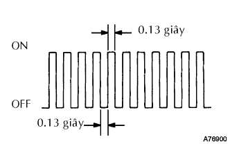

HỆ THỐNG SFI > QUY TRÌNH CHẾ ĐỘ KIỂM TRA |

| QUY TRÌNH CHẾ ĐỘ KIỂM TRA |
Chắc chắn rằng các điều kiện sau đây đã thoả mãn.
Điện áp ắc quy 11 V hay hơn.
Bướm ga đóng hoàn toàn.
Chuyển cần số đến P hay N.
Công tắc A/C OFF.
Tắt khoá điện.
Nối máy chẩn đoán với giắc DLC3.
Bật khóa điện đến vị trí ON và bật máy chẩn đoán ON.
Vào các menu sau: Powertrain / Engine and ECT / Utility / Check Mode.
|  |
Chắc chắn rằng đèn MIL nháy như trong hình vẽ.
Khởi động động cơ (đèn MIL phải tắt)
Mô phỏng tình trạng hư hỏng do khách hàng mô tả.
Sau khi mô phỏng tình trạng hư hỏng, hãy kiểm tra các mã DTC, dữ liêu lưu tức thời và các dữ liệu khác.
Sau khi kiểm tra các mã DTC, hãy kiểm tra các mạch tương ứng.